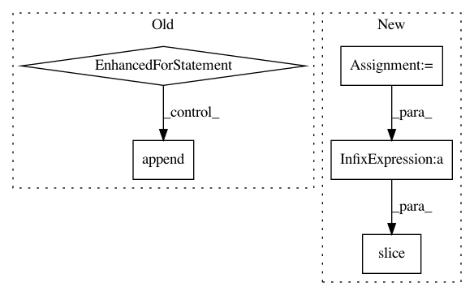

9a30bb661ffbf93d095c48d2ba7971f88c10eb38,official/resnet/vgg_preprocessing.py,,_central_crop,#Any#Any#Any#,171
Before Change
the list of cropped images.
outputs = []
for image in image_list:
image_height = tf.shape(image)[0]
image_width = tf.shape(image)[1]
offset_height = (image_height - crop_height) / 2
offset_width = (image_width - crop_width) / 2
outputs.append(_crop(image, offset_height, offset_width,
crop_height, crop_width))
return outputs
def _mean_image_subtraction(image, means):
After Change
height, width = _get_h_w(image)
total_crop_height = (height - crop_height)
crop_top = total_crop_height // 2
total_crop_width = (width - crop_width)
crop_left = total_crop_width // 2
return tf.slice(
image, [crop_top, crop_left, 0], [crop_height, crop_width, -1])
def _mean_image_subtraction(image, means):
Subtracts the given means from each image channel.
In pattern: SUPERPATTERN
Frequency: 3
Non-data size: 5
Instances
Project Name: tensorflow/models
Commit Name: 9a30bb661ffbf93d095c48d2ba7971f88c10eb38
Time: 2018-02-16
Author: karmel@arcaio.com
File Name: official/resnet/vgg_preprocessing.py
Class Name:
Method Name: _central_crop
Project Name: AllenCellModeling/pytorch_fnet
Commit Name: 2db4628918bba182c02fca614dbb3b82cca90bd3
Time: 2017-11-10
Author: chek.o@outlook.com
File Name: fnet/data/transforms.py
Class Name: Cropper
Method Name: __call__
Project Name: nilearn/nilearn
Commit Name: e2bf248a400175ac1a153cdba62147e9162a710f
Time: 2019-04-17
Author: gkiar07@gmail.com
File Name: nilearn/image/resampling.py
Class Name:
Method Name: resample_img